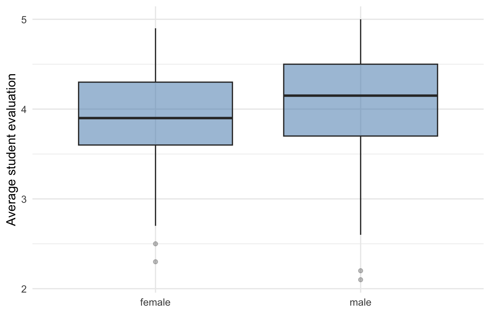
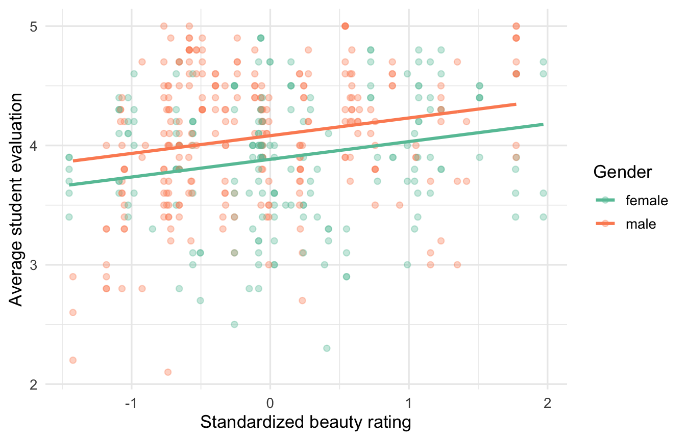
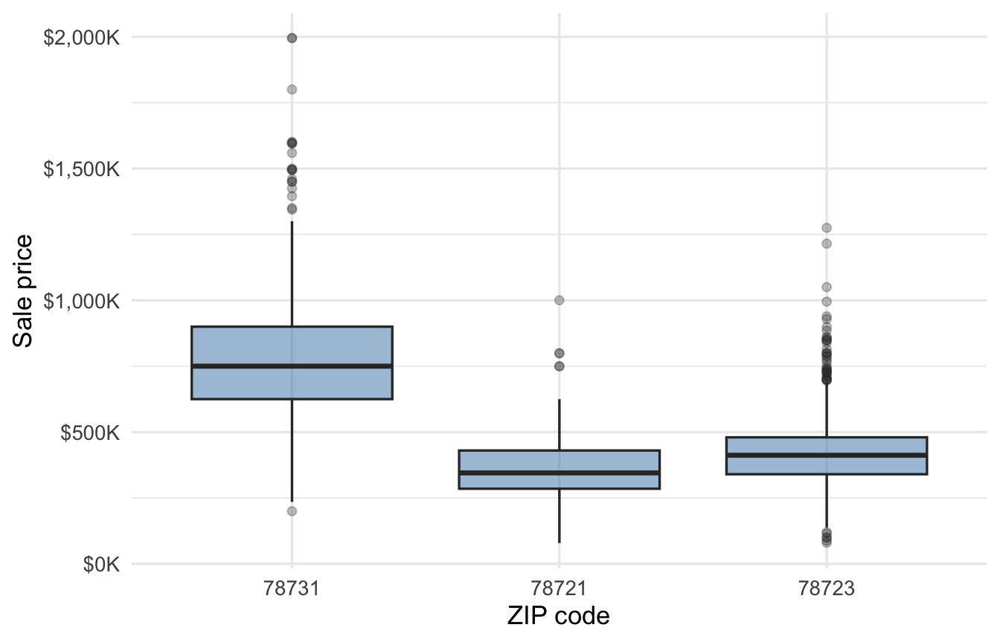
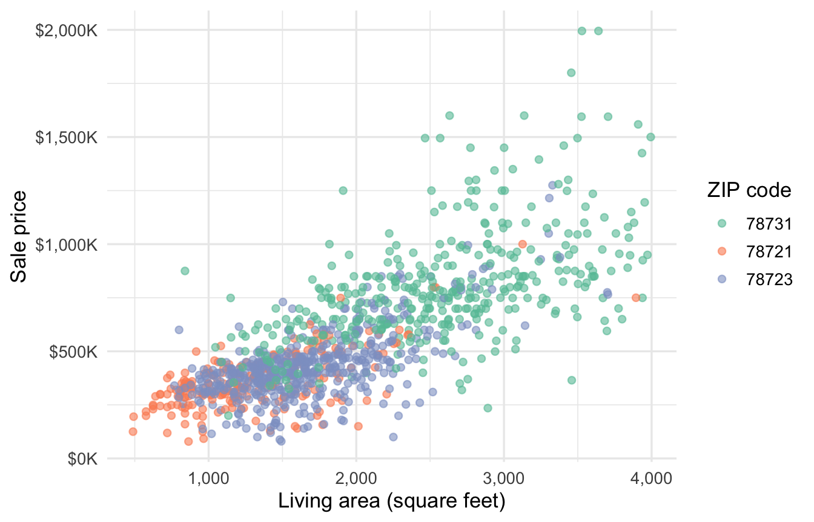
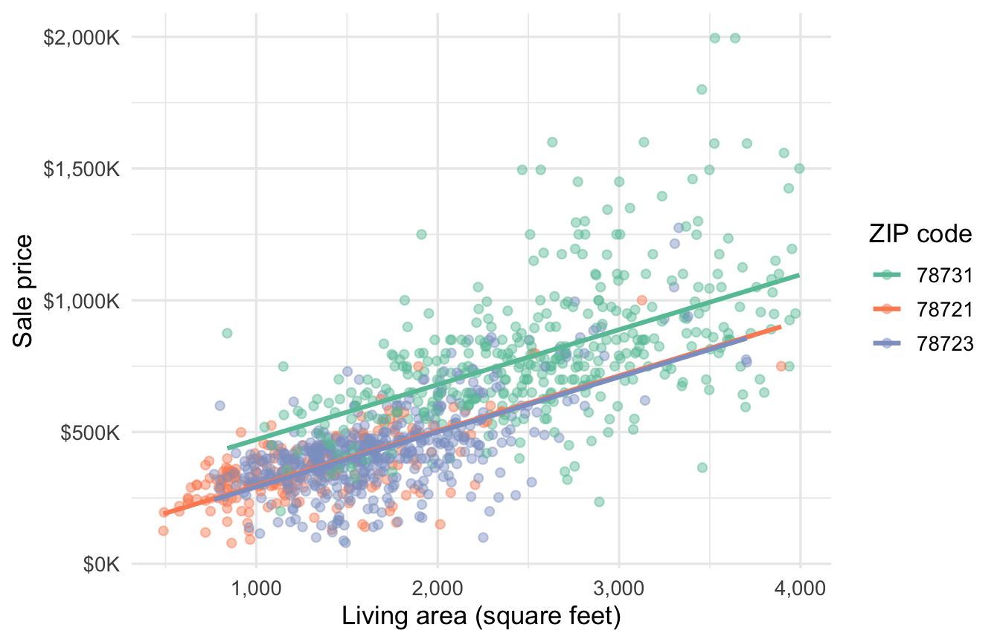

22 Categorical predictors
To incorporate categorical predictors into a regression model, we need to convert the categories into numerical values. We do this with dummy variables, the 0/1 variables from Section 5.3. The category represented by zero is called the reference category. We begin with the simple case of a two-level categorical predictor, then move to three or more levels.
22.1 Two categories
Recall the course-evaluation example from the beginning of our regression discussion. The ultimate goal was to understand the relationship, if any, between an instructor’s appearance and their average course evaluations. This is complicated by the fact that many variables are plausibly related to both appearance and evaluations. Multiple regression gives us one tool to try and adjust for these other variables. One such variable is gender. Figure 22.1 shows the distributions of course evaluations by gender. Male instructors have a mean evaluation of 4.07, compared with 3.90 for female instructors.
Evaluations vary within both groups, but their centers also differ. A regression model needs a numerical representation of gender to express this comparison as an intercept and a coefficient. We can define male = 1 for male instructors and male = 0 for female instructors. The choice is arbitrary — it changes what the coefficients refer to, but not, as we’ll see, the model’s fit.
The model uses this coding to turn the comparison between categories into an intercept and a coefficient. We get the fitted equation
\[ \widehat{\text{eval}} = 3.90 + 0.17\text{male}. \]
Let’s see what that means. For a female instructor, male = 0, so
\[ \widehat{\text{eval}}_{ \text{female}} = 3.90 + 0.17(0) = 3.90. \]
For a male instructor, male = 1, so
\[ \widehat{\text{eval}}_{ \text{male}} = 3.90 + 0.17(1) = 4.07. \]
These are exactly the two group means we started with at the beginning of this section. Remember, the regression prediction is our best guess at the average outcome for a given value of the \(X\) variables. Since \(X\) takes two levels here, the linear model exactly reproduces the two group means.
The “slope” 0.17 is the difference in predicted evaluations for male versus female instructors. We get “male minus female” because we coded female as the zero or reference category — we understand the coefficient in reference to the average evaluations for female instructors, given simply by the intercept (which is always the predicted value when all \(X\) variables are set to zero).
NoteDefinition: Reference category
The reference category is the category for which all dummy variables representing a categorical predictor equal zero. Other category coefficients describe differences relative to that category.
Changing the reference category changes the signs and interpretations of the category coefficients. It does not change the fitted values, residuals, or overall model fit. If we choose male as the reference instead, the intercept describes male instructors and the dummy coefficient becomes the female-minus-male difference.
The 95% confidence interval for the male-minus-female difference runs from 0.07 to 0.27 evaluation points, the interval reported for the dummy coefficient in Table 22.1. These are plausible values for the population difference; zero is not a plausible value here, so we have evidence that the population means differ by gender. We have not established that female instructors get lower evaluations on average because they are female, however!
| Estimate | Std. error | 95% CI | t | p-value | |
|---|---|---|---|---|---|
| Intercept (female) | 3.90 | 0.04 | [3.82, 3.98] | 99.19 | <0.001 |
| Male vs. female | 0.17 | 0.05 | [0.07, 0.27] | 3.25 | 0.001 |
| Residual standard error | 0.55 | ||||
| R² / Adjusted R² | 0.022 / 0.020 | ||||
| n | 463 |
22.2 Categorical predictors in multiple regression
The same coding works when a model contains other predictors, which gives us the ability to control for other variables when we make a comparison between groups. We add beauty, the instructor’s standardized panel rating, to compare instructors who have the same beauty score. Female remains the reference category.
The fitted model is
\[ \widehat{\text{eval}} = 3.88 + 0.15\text{beauty} + 0.20\text{male}. \]
Interpreting the coefficients in a multiple regression model is similar to the simple case, but we now adjust for the other predictors:
- Among instructors with the same beauty score, male instructors have predicted evaluations 0.20 points higher than female instructors.
- Among instructors of the same recorded gender, a one-unit increase in beauty corresponds to a predicted evaluation increase of 0.15 points. Because beauty is standardized, one unit is one standard deviation in the panel rating. You can read both comparisons while holding the other predictor constant, as in our earlier multiple-regression discussion.
This model draws one fitted line for each gender in Figure 22.2. Plugging in male = 0 gives the female line, and male = 1 gives the male line:
- Female line: \(\widehat{\text{eval}} = 3.88 + 0.15\text{beauty}\)
- Male line: \(\widehat{\text{eval}} = 3.88 + 0.15\text{beauty} + 0.20\)
These are plotted below.

Notice the intercept is no longer the female mean of 3.90: 3.88 is the predicted evaluation for a female instructor with a beauty rating of exactly 0. Both lines have a slope of 0.15; they are forced to be parallel by this model specification. The male dummy shifts that line vertically by 0.20 points, so the two lines stay the same distance apart. Table 22.2 sets this model beside the gender-only model from the last section; its confidence intervals quantify the uncertainty in these two conditional comparisons.
| Gender | Gender + beauty | |
|---|---|---|
| Intercept (female) | 3.90 | 3.88 |
| [3.82, 3.98] | [3.81, 3.96] | |
| Male vs. female | 0.17 | 0.20 |
| [0.07, 0.27] | [0.10, 0.30] | |
| Beauty rating | 0.15 | |
| [0.09, 0.21] | ||
| Residual standard error | 0.55 | 0.54 |
| R² | 0.022 | 0.066 |
| Adjusted R² | 0.020 | 0.062 |
| n | 463 | 463 |
The plausible range for the male-minus-female difference is 0.10 to 0.30 points among instructors with the same beauty score. For a one-standard-deviation increase in beauty, the plausible range is 0.09 to 0.21 points among instructors of the same recorded gender. If the gender gap were driven by beauty ratings, comparing instructors with the same beauty score should shrink it. Instead the estimated gap grows slightly, from 0.17 to 0.20 points — female instructors in these data average slightly higher beauty ratings — so we can’t attribute the difference in average evaluations to a correlation between gender and the beauty score.
22.3 Three or more categories
The Austin housing data contain sale prices from ZIP codes 78731, 78721, and 78723 (recorded in the column zipcode). Figure 22.3 compares latest_price, the sale price in dollars, across the three categories.

There is one natural dummy variable for each ZIP code. Each dummy marks whether a home is in that ZIP code, so exactly one of the three dummies equals 1 for every home.
| ZIP code | \(D_{78731}\) | \(D_{78721}\) | \(D_{78723}\) |
|---|---|---|---|
| 78731 | 1 | 0 | 0 |
| 78721 | 0 | 1 | 0 |
| 78723 | 0 | 0 | 1 |
A regression model with an intercept cannot use all three dummies at once. For every home, \(D_{78731}+D_{78721}+D_{78723}=1\), which is also the value of the intercept’s constant term. Including all three dummies would give the model two ways to represent the same information. We therefore omit \(D_{78731}\) and use 78731 as the reference category, leaving the coding in Table 22.4.
| ZIP code | \(D_{78721}\) | \(D_{78723}\) |
|---|---|---|
| 78731 | 0 | 0 |
| 78721 | 1 | 0 |
| 78723 | 0 | 1 |
Measuring price in thousands of dollars, the fitted regression equation is
\[ \widehat{\text{price}}_{(\$1{,}000s)} = 796.98 - 435.55D_{78721} - 365.82D_{78723}. \]
The intercept gives the mean sale price in 78731. Each dummy coefficient then compares its ZIP code with 78731. Plugging in the two dummies gives the three predicted prices:
\[ \begin{aligned} \widehat{\text{price}}_{78731} &= 796.98 \\ \widehat{\text{price}}_{78721} &= 796.98 - 435.55 = 361.43 \\ \widehat{\text{price}}_{78723} &= 796.98 - 365.82 = 431.16. \end{aligned} \]
These are the three group means, measured in thousands of dollars.
Now suppose that we want to compare the other ZIP codes with 78721 instead. We omit \(D_{78721}\), making 78721 the reference category, and fit the model with \(D_{78731}\) and \(D_{78723}\):
\[ \widehat{\text{price}}_{(\$1{,}000s)} = 361.43 + 435.55D_{78731} + 69.73D_{78723}. \]
The coefficients have changed because the comparisons have changed. The intercept is now the mean sale price in 78721. The two dummy coefficients tell us that homes in 78731 sold for 435.55 thousand dollars more on average than homes in 78721, while homes in 78723 sold for 69.73 thousand dollars more on average than homes in 78721.
The fitted values have not changed. Setting both dummies to zero gives the 78721 mean, while setting each dummy to 1 in turn recovers the same 78731 and 78723 means as the first model. Changing the reference category changes the coefficient comparisons, not the model’s predictions, residuals, or overall fit.
The same construction works for any categorical predictor. A predictor with \(K\) categories gives us \(K\) possible dummy variables. With an intercept in the model, we omit the dummy for the reference category and include the remaining \(K-1\).
The 95% confidence interval for the 78721-minus-78731 mean-price difference runs from -$469,139 to -$401,964. For 78723 minus 78731, the plausible range runs from -$392,652 to -$338,982. Both intervals describe unadjusted differences in mean sale price, and both appear in Table 22.5.
| Estimate | Std. error | 95% CI | t | p-value | |
|---|---|---|---|---|---|
| Intercept (78731) | $796,980 | $10,243 | [$776,881, $817,078] | 77.80 | <0.001 |
| 78721 vs. 78731 | −$435,551 | $17,118 | [−$469,139, −$401,964] | −25.44 | <0.001 |
| 78723 vs. 78731 | −$365,817 | $13,677 | [−$392,652, −$338,982] | −26.75 | <0.001 |
| Residual standard error | $202,030 | ||||
| R² / Adjusted R² | 0.461 / 0.460 | ||||
| n | 1,103 |
22.3.1 Accounting for living area
The estimates above are raw, overall means and comparisons. Houses in 78731 sell for more on average than those in the other two ZIP codes. Does this represent a premium associated with living in 78731, or are the homes there different on other factors associated with price?
Figure 22.4 plots sale price against living area, with the homes colored by ZIP code.

Homes in 78731 are larger on average than those in the other two ZIP codes. How much of the difference in average sale prices is associated with these differences in living area? We can answer this question with a multiple regression model that includes both ZIP code and living area as predictors.
We add living_area_sq_ft, the home’s living area in square feet, so the ZIP coefficients compare homes of the same size. Table 22.6 compares the ZIP coefficients before and after we account for living area.
| ZIP code only | ZIP code + living area | |
|---|---|---|
| Intercept (78731) | $796,980 | $262,855 |
| [$776,881, $817,078] | [$215,812, $309,899] | |
| 78721 vs. 78731 | −$435,551 | −$174,898 |
| [−$469,139, −$401,964] | [−$209,675, −$140,122] | |
| 78723 vs. 78731 | −$365,817 | −$179,643 |
| [−$392,652, −$338,982] | [−$206,338, −$152,948] | |
| Living area (sq ft) | $209 | |
| [$191, $226] | ||
| Residual standard error | $202,030 | $164,290 |
| R² | 0.461 | 0.644 |
| Adjusted R² | 0.460 | 0.643 |
| n | 1,103 | 1,103 |
The raw price gaps of $435,551 and $365,817 shrink to adjusted gaps of $174,898 and $179,643. Living area accounts for part of each raw gap. The intercept also needs re-interpreting once living area enters the model: it is no longer the 78731 mean, but the predicted price of a 78731 home with zero square feet — an extrapolation, since no such home exists.
Among homes with the same living area, the predicted price in 78721 is $174,898 lower than in 78731. For 78723, the adjusted difference is $179,643 lower. The plausible ranges are -$209,675 to -$140,122 and -$206,338 to -$152,948, respectively. Both exclude zero. The adjusted model still estimates lower sale prices in 78721 and 78723 than in 78731 for homes of the same size.
The model assigns the three ZIP codes a common living-area slope of $209 per square foot. Its plausible range is $191 to $226 per square foot. Figure 22.5 shows the observations and the three fitted lines. The ZIP dummies shift the lines vertically while the area slope remains fixed.
At any fixed living area, the vertical gap between two of the fitted lines is the adjusted ZIP difference: how much the predicted price differs between those two ZIP codes for a house of that size.

This comparison remains descriptive rather than causal. We could add other predictors to compare more similar homes, but this model stops after accounting for living area.